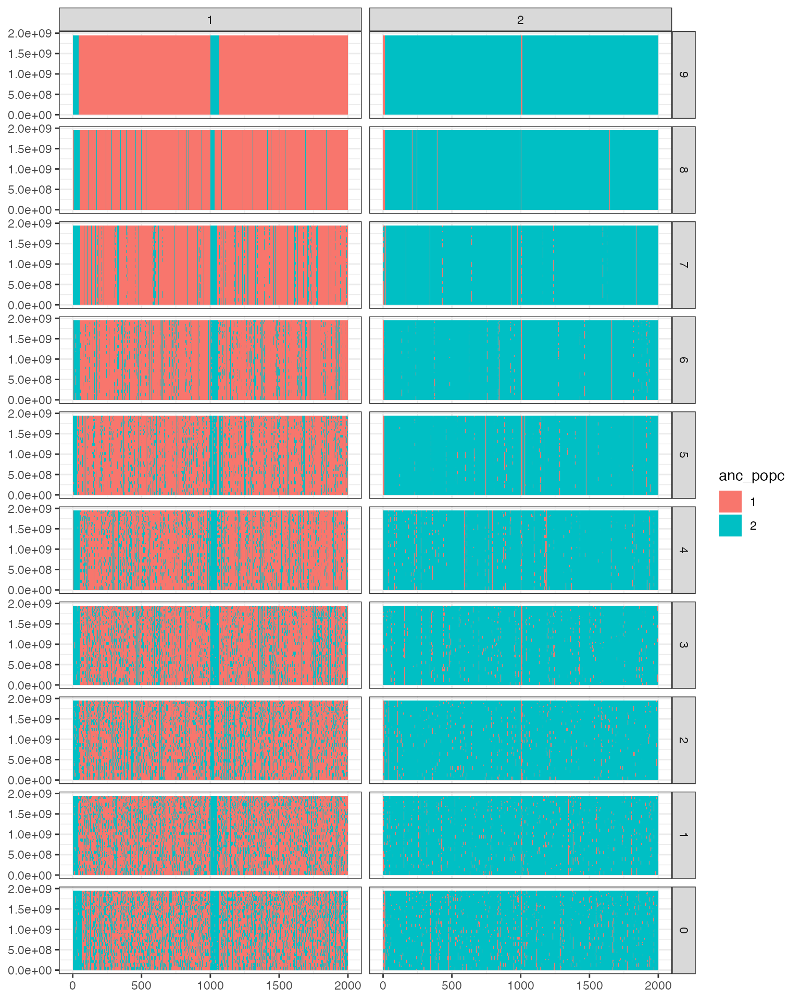
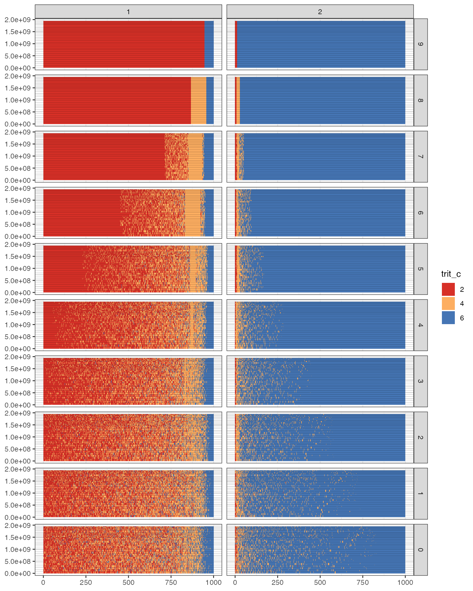

Example Use of MixedUpSlimSims
example-use-of-MixedUpSlimSims.RmdThis vignette walks through a complete MixedUpSlimSims workflow. We simulate from a demographic model with asymmetric migration between two populations, using allele frequencies similar to Westslope cutthroat trout (WCT) and rainbow trout (RBT) in Cyclone Creek. We then process the resulting SLiM tree sequence to recover ancestry tracts, simulate diagnostic markers from those tracts, parse the VCFs written by SLiM, and assemble data sets that can be used for downstream method testing.
The main ingredients you need to bring to this workflow are:
- allele frequencies or founder genotypes for the source populations;
- chromosome or genome position information for those markers;
- a SLiM script that reads the founder genotypes, records tree sequences, and writes the expected output files; and
- a decision about which populations and years should be sampled and summarized.
The example below spells those steps out one at a time. The
slim_sim_a_dataset() helper combines many of these steps
when your SLiM script and input files follow the package
conventions.
Initial set up
See the package README about configuring your system to be able to
run this. The main issue is to define the MUP_CONDA path as
a system (Unix/Linux) environment variable and then tell
reticulate to use that environment before Python is
initialized.
After that you can get started.
library(reticulate)
#> Warning: package 'reticulate' was built under R version 4.4.3
library(tidyverse)
#> Warning: package 'ggplot2' was built under R version 4.4.3
library(MixedUpSlimSims)
library(CKMRpop)
mup_conda <- Sys.getenv("MUP_CONDA")
if (mup_conda == "") {
stop("Set MUP_CONDA to the full path of your MixedUpSlimSims conda environment.")
}
reticulate::use_condaenv(mup_conda, required = TRUE)
Sys.setenv(PATH = paste(file.path(mup_conda, "bin"), Sys.getenv("PATH"), sep = ":"))Making allele frequencies
This example starts from allele frequencies estimated for Cyclone Creek. The input file has one row per marker, with marker positions and population-specific allele frequencies.
cc_freqs <- read_csv("inputs/cyclone-creek-variable-markers-freqs.csv")
#> Rows: 628 Columns: 4
#> ── Column specification ────────────────────────────────────────────────────────
#> Delimiter: ","
#> chr (1): chrom_f
#> dbl (3): pos, A, B
#>
#> ℹ Use `spec()` to retrieve the full column specification for this data.
#> ℹ Specify the column types or set `show_col_types = FALSE` to quiet this message.
head(cc_freqs)
#> # A tibble: 6 × 4
#> chrom_f pos A B
#> <chr> <dbl> <dbl> <dbl>
#> 1 omy01 5604542 1.00 0.0400
#> 2 omy01 15520536 0.502 0.00309
#> 3 omy01 16635910 0.493 0.367
#> 4 omy01 17490399 0.932 0.00329
#> 5 omy01 17490429 0.0657 0.00239
#> 6 omy01 18387369 0.000522 0.323In this file, column A is WCT and column B
is RBT. In the SLiM model used below, population 1 is the WCT-like
population receiving some RBT ancestry, and population 2 is the RBT-like
population. Therefore, we rename the frequency columns to
af1 and af2 in that order.
MixedUpSlimSims also needs each marker’s cumulative genomic position:
its coordinate across the whole genome, not only within a chromosome.
The cumulative_genome_position() helper adds those
coordinates from chromosome metadata.
cc_freqs2 <- cc_freqs %>%
mutate(chrom = as.character(chrom_f)) %>%
select(-chrom_f) %>%
cumulative_genome_position(mykiss_chroms)
frqs <- cc_freqs2 %>%
rename(af1 = A, af2 = B, POS = cPOS) %>%
select(POS, af1, af2)The SLiM script will initialize the first generation from a VCF named
slim_input.vcf. Here we simulate 1000 diploid founder
genotypes from each source population and write them in the format that
the example SLiM model expects.
simulate_founder_genos(frqs, N = c(1000, 1000), pop_names = c("wct", "rbt")) %>%
write_input_vcf(out_path = "slim_input.vcf") Running SLiM
The SLiM script controls the demography, migration, tree-sequence
recording, and which individuals are written to VCF. Several example
scripts are included in inst/SLiM-models; this vignette
uses the two-population, 10-generation example.
# get the SLiM file. It ships with the R package.
file <- system.file("SLiM-models/2-pop-10-gens-vcf-initialize.slim", package = "MixedUpSlimSims")The full script is available on GitHub: 2-pop-10-gens-vcf-initialize.slim. For compatibility with the functions used below, the script needs to:
- read founder genotypes from
slim_input.vcf; - call
initializeTreeSeq()and write a tree sequence namedSLiM.trees; - remember the individuals needed for ancestry tracing, especially the founder individuals whose population origins will define ancestry; and
- write sampled VCFs with names like
p1-10.vcf, where the population and SLiM year can be parsed from the file name.
Now run the model with SLiM:
This writes sampled VCF files for the years requested in the SLiM script:
dir(pattern = "p[0-9]+-[0-9]+\\.vcf")
#> [1] "p1-10.vcf" "p1-11.vcf" "p1-9.vcf" "p2-10.vcf" "p2-11.vcf" "p2-9.vcf"It also writes SLiM.trees, which records the ancestry
information that tskit will process.
Processing the trees
SLiM time runs forward, while tskit time is measured
backward from the final generation. In this example, SLiM year 11 is
tskit time 0, SLiM year 10 is tskit time 1,
and so on back to SLiM year 1 at tskit time 10. Since there
are 11 years of simulation, we retain nodes from tskit
times 0 through 10 in populations 1 and 2.
# read the trees. Dump just captures the python code that was
# evaluated to get things in the py variable in the global env.
dump <- read_and_filter_trees(
trees_path = "SLiM.trees",
years_list = list(`1` = 0:10, `2` = 0:10)
)read_and_filter_trees() loads and simplifies the tree
sequence, leaving the simplified tskit tree sequence in
py$ts. The next step turns the Python nodes and individuals
into ordinary R tibbles.
ni <- ts_nodes_and_inds(py$ts)The founder nodes define the population of origin for ancestry
tracts. In this example they are the nodes that existed at
tskit time 10, which corresponds to SLiM year 1.
founders <- founder_node_ids_and_pops(ni, 10)The focal nodes are the individuals whose ancestry we want to
summarize. These could be only the final sampled generations. Here, to
show the ancestry process through time, we use all individuals from SLiM
year 2 forward, which is tskit time 9 down to 0, in both
populations.
Population labels coming out of this SLiM simulation are base-1 indexed, so the populations are named 1 and 2 rather than 0 and 1.
focal_tibble <- tibble(
pop = rep(c(1,2), each = 10),
time = rep(0:9, 2)
)
focal_tibble
#> # A tibble: 20 × 2
#> pop time
#> <dbl> <int>
#> 1 1 0
#> 2 1 1
#> 3 1 2
#> 4 1 3
#> 5 1 4
#> 6 1 5
#> 7 1 6
#> 8 1 7
#> 9 1 8
#> 10 1 9
#> 11 2 0
#> 12 2 1
#> 13 2 2
#> 14 2 3
#> 15 2 4
#> 16 2 5
#> 17 2 6
#> 18 2 7
#> 19 2 8
#> 20 2 9get_focal_nodes() converts those population-year choices
into the node IDs needed by the ancestry-linking code.
fnl <- get_focal_nodes(
ni,
Focal = focal_tibble
)The object fnl keeps focal nodes divided by year.
ancestral_segs() then cycles over those years and links
each cohort back to the founders separately. This avoids a problem in
which older focal samples can become the linked ancestors of younger
samples, excluding the actual founders whose populations of origin we
need.
Now recover the ancestry segments for all focal individuals.
segments_tib <- ancestral_segs(
ts = py$ts,
focal_nodes_list = fnl,
founder_nodes = founders$nodes,
nodes_tib = ni$nodes_tib,
indiv_tib = ni$indiv_tib
)Plotting the haploid ancestry segments
This is done with a simple function:
plot_ancestry_of_genomes(segments_tib)
Obtaining and plotting the ancestry tracts within each individual
The previous plot shows haploid ancestry segments for individual
genomes. indiv_ancestry_tracts() combines the two
haplotypes within each diploid individual, producing intervals labeled
by diploid ancestry state.
indiv_segs <- indiv_ancestry_tracts(segments_tib)Plot the diploid ancestry tracts:
plot_ancestry_tracts(indiv_segs, chrom_ends = mykiss_chroms)
The left column is population 1 which is the WCT pop here. And the right column is population 2 which is RBT.
The colors denote the different ancestry combinations, which are coded in decimal equivalents of trits or ternary numbers. 2 = 2 doses from p1; 4 = 1 dose from p1 and one from p2; 6 is two doses from p2. This can extend to more than two species.
How diploid ancestry states are encoded
The ancestry state is encoded as a ternary number, where each digit is the number of copies inherited from one source population. Each digit can be 0, 1, or 2. For diploids, the digits must sum to 2. The encoded value is then stored as the decimal equivalent of that ternary number. For example, in a three-species case:
- 002: two copies from species 1 —
- 011: one copy from species 1 and one copy from species 2 —
- 020: two copies from species 2 —
- 200: two copies from species 3 —
This encoding also extends naturally to simulations with more than two source populations.
Calculating admixture fractions from the ancestry tracts
Once the diploid ancestry tracts have been assembled, genome-wide admixture fractions are a direct summary of those intervals.
Q_values <- admixture_fracts_from_ancestry_tracts(indiv_segs)Getting into the VCFs
A note on nomenclature
Throughout this package, ped_id means the pedigree ID of
the individual. SLiM’s VCF output also has a
slimGenomePedigreeIDs field, but those are the pedigree IDs
of the haplotypes or gametes, not of the diploid individuals. In the
tibbles produced here, ped_id, ped_p1, and
ped_p2 refer to individual pedigree IDs.
The function slim_vcf2tib() reads a single VCF into a
long format. It uses bcftools through a pipe. Long format
is not especially space-efficient, but it is convenient for the
moderate-size examples used here and for downstream tidyverse
operations.
p1_10_genos <- slim_vcf2tib("p1-10.vcf")
head(p1_10_genos, n = 10)
#> # A tibble: 10 × 9
#> path vcf_id ped_id node_id1 node_id2 chrom pos haplo allele
#> <chr> <chr> <dbl> <int> <int> <dbl> <dbl> <chr> <chr>
#> 1 p1-10.vcf i0 18213 36426 36427 1 5604542 1 1
#> 2 p1-10.vcf i0 18213 36426 36427 1 5604542 2 0
#> 3 p1-10.vcf i0 18213 36426 36427 1 15520536 1 0
#> 4 p1-10.vcf i0 18213 36426 36427 1 15520536 2 0
#> 5 p1-10.vcf i0 18213 36426 36427 1 16635910 1 1
#> 6 p1-10.vcf i0 18213 36426 36427 1 16635910 2 0
#> 7 p1-10.vcf i0 18213 36426 36427 1 17490399 1 1
#> 8 p1-10.vcf i0 18213 36426 36427 1 17490399 2 1
#> 9 p1-10.vcf i0 18213 36426 36427 1 17490429 1 0
#> 10 p1-10.vcf i0 18213 36426 36427 1 17490429 2 0Passing long = FALSE returns a wide tibble instead.
p1_10_wide <- slim_vcf2tib("p1-10.vcf", long = FALSE)
# look at a piece of that
head(p1_10_wide[, 1:9], n = 10)
#> # A tibble: 10 × 9
#> path chrom pos `18213` `18637` `18225` `18029` `18621` `18942`
#> <chr> <dbl> <dbl> <chr> <chr> <chr> <chr> <chr> <chr>
#> 1 p1-10.vcf 1 5604542 1|0 1|1 1|1 0|1 1|1 1|1
#> 2 p1-10.vcf 1 15520536 0|0 0|1 1|1 0|0 1|0 0|0
#> 3 p1-10.vcf 1 16635910 1|0 1|0 0|1 0|0 1|1 0|0
#> 4 p1-10.vcf 1 17490399 1|1 1|1 1|1 0|1 1|1 1|1
#> 5 p1-10.vcf 1 17490429 0|0 0|0 1|0 0|0 0|0 0|0
#> 6 p1-10.vcf 1 18387369 0|0 0|0 0|0 1|0 0|0 0|0
#> 7 p1-10.vcf 1 19367962 1|1 0|0 1|0 0|0 1|0 0|0
#> 8 p1-10.vcf 1 23890205 1|0 0|1 0|1 1|1 1|0 0|1
#> 9 p1-10.vcf 1 25282538 0|0 0|1 1|0 0|0 0|1 0|0
#> 10 p1-10.vcf 1 29189531 1|0 1|1 0|1 1|1 0|1 1|1Most workflows read multiple VCF files. The
slim_vcfs2tib() helper lets you specify the populations and
SLiM years to read. It parses the file names and drops columns that are
not usually needed downstream. For example, to read SLiM years 9, 10,
and 11 from populations p1 and p2:
sample_genos_long <- slim_vcfs2tib(Flist = list(p1 = 9:11, p2 = 9:11))That produces a large tibble, but it makes later filtering and summarization straightforward.
Finding pairwise relationships among the sampled individuals
Because the SLiM model kept pedigree information, we can recover the
known relationships among sampled individuals. This is useful for
downstream tests of parentage or close-kin methods, where, for example,
one might want to know how often aunts, uncles, or siblings are confused
with parents. The package wraps the relationship-finding code in
pairwise_relationships().
pairwise_relats <- pairwise_relationships(
IT = ni$indiv_tib,
sample_years = 0:2,
num_gen = 2
)Count the relationship classes found among the sampled individuals:
pairwise_relats %>%
count(dom_relat, max_hit)
#> # A tibble: 10 × 3
#> dom_relat max_hit n
#> <chr> <int> <int>
#> 1 A 1 32160
#> 2 A 2 97
#> 3 FC 1 47910
#> 4 FC 2 363
#> 5 FC 3 1
#> 6 GP 1 7982
#> 7 GP 2 9
#> 8 PO 1 8000
#> 9 Si 1 12140
#> 10 Si 2 14Key to these relationships:
-
Ais “avuncular”, meaning aunt-niece or uncle-niece, etc. -
FCis first cousin -
GPis grandparent-grandchild -
PO1is parent-offspring -
Siis sibling
The max_hit column records how many ancestors are shared
between these individuals at this level of relationship. So
Si with max_hit = 1 is a half-sibling, while
Si with max_hit = 2 is a full-sibling.
This simple Wright-Fisher example produces relatively few full siblings compared with half siblings. For analyses that need more full-sibling structure, a non-Wright-Fisher SLiM model can be used instead.
Simulating the diagnostic markers
The true ancestry tracts can also be used to simulate diagnostic markers. The example diagnostic marker set is included as package data. Here we place those markers into individuals from the last three years of the simulation.
sim_diag <- example_spp_diag_markers %>%
cumulative_genome_position(mykiss_chroms) %>%
rename(diag_spp_idx = diag_spp) %>%
place_diagnostic_markers(IndivSegs = indiv_segs %>% filter(ind_time %in% 0:2))
#> Running bedtools in /var/folders/ln/5brnn1wx0vj58fhlbbdjm8h40000gp/T//RtmpN2fTeD/file13ee22906ee81
#> Rows: 7782000 Columns: 5
#> ── Column specification ────────────────────────────────────────────────────────
#> Delimiter: "\t"
#> chr (1): chrom
#> dbl (4): diag_spp_idx, pos, ped_id, geno
#>
#> ℹ Use `spec()` to retrieve the full column specification for this data.
#> ℹ Specify the column types or set `show_col_types = FALSE` to quiet this message.Writing out those two data sets
The final step prepares the simulated marker data and the corresponding truth data for downstream analyses. We subsample individuals, format the diagnostic markers, convert the variable-marker VCF data back to chromosome-specific positions, and keep the true metadata, ancestry fractions, and ancestry tracts.
set.seed(1)
subsamp <- sample(unique(sim_diag$ped_id), size = 2500, replace = FALSE)
sim_diag_ready <- sim_diag %>%
filter(ped_id %in% subsamp) %>%
rename(diag_spp = diag_spp_idx) %>%
mutate(diag_spp = case_match(diag_spp, 1 ~ "WCT", 2 ~ "RBT", 3 ~ "YCT")) %>%
rename(n = geno, indiv = ped_id) %>%
mutate(indiv = as.character(indiv), pos = as.integer(pos), n = as.integer(n))
# Convert the variable markers back to their original chromosome-specific
# genome positions.
cc_freqs3 <- cc_freqs2 %>%
select(pos, chrom, cPOS)
sim_var_snps_ready <- sample_genos_long %>%
filter(ped_id %in% subsamp) %>%
select(pos, ped_id, haplo, allele) %>%
rename(cPOS = pos) %>%
left_join(cc_freqs3, by = join_by(cPOS)) %>%
select(chrom, pos, ped_id, allele) %>%
group_by(chrom, pos, ped_id) %>%
summarise(n = sum(as.integer(allele))) %>%
ungroup() %>%
arrange(ped_id, chrom, pos) %>%
rename(indiv = ped_id) %>%
mutate(indiv = as.character(indiv), pos = as.integer(pos))
#> `summarise()` has grouped output by 'chrom', 'pos'. You can override using the
#> `.groups` argument.The object Q_values contains individual metadata,
pedigree information, and true admixture fractions. We also keep the
true ancestry segments for the same individuals included in the marker
data.
Q_values
#> # A tibble: 40,000 × 9
#> ind_id anc_pop admix_fract ind_pop ind_time sex ped_id ped_p1 ped_p2
#> <dbl> <dbl> <dbl> <int> <dbl> <int> <int> <int> <int>
#> 1 0 1 0 1 0 0 20000 19195 19946
#> 2 0 2 1 1 0 0 20000 19195 19946
#> 3 1 1 0 1 0 0 20001 19433 19577
#> 4 1 2 1 1 0 0 20001 19433 19577
#> 5 2 1 0.00533 1 0 0 20002 19425 19804
#> 6 2 2 0.995 1 0 0 20002 19425 19804
#> 7 3 1 0 1 0 0 20003 19195 19668
#> 8 3 2 1 1 0 0 20003 19195 19668
#> 9 4 1 0.0182 1 0 0 20004 19435 19912
#> 10 4 2 0.982 1 0 0 20004 19435 19912
#> # ℹ 39,990 more rows
true_segs <- indiv_segs %>%
filter(ped_id %in% subsamp)These objects can be written together as one R object containing the simulated observed data and the known truth:
dir.create("results/004", showWarnings = FALSE, recursive = TRUE)
sim_results <- list(
spp_diag = sim_diag_ready,
var_snps = sim_var_snps_ready,
metaQ = Q_values,
true_segs = true_segs,
cumul_genome = mykiss_chroms,
alle_freqs = cc_freqs
)
write_rds(sim_results, file = "results/004/sim_results.rds", compress = "xz")